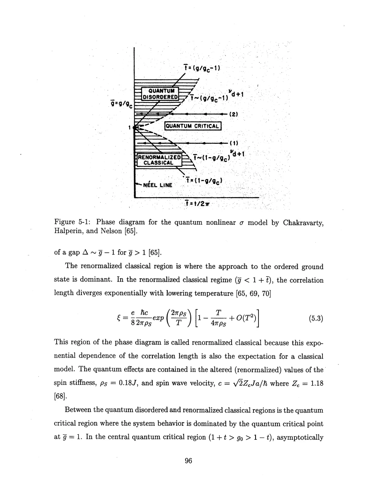
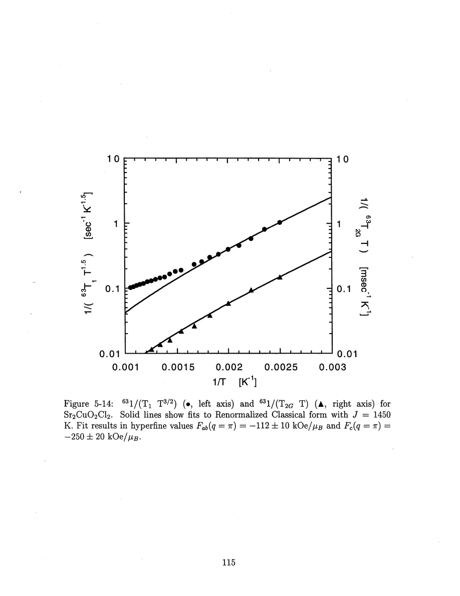
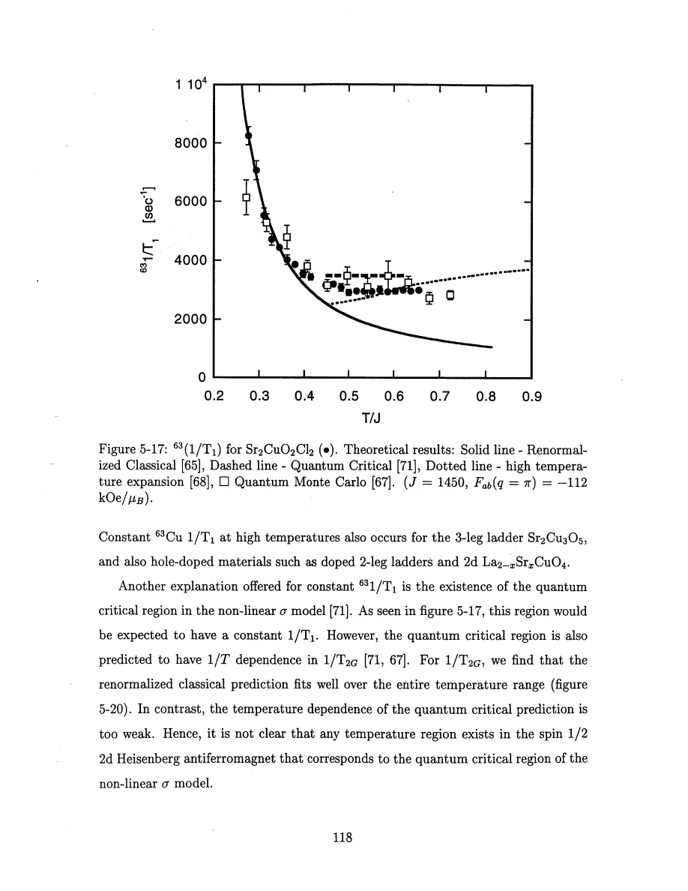
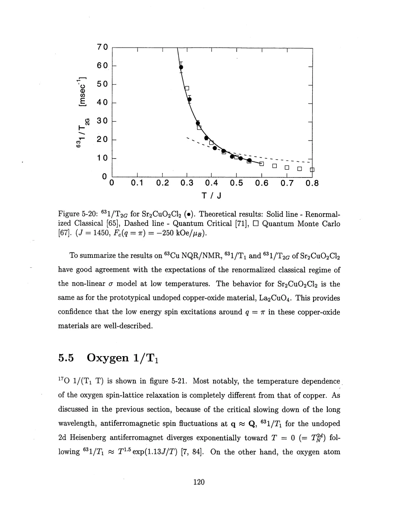

Thurber · supplied source 1999 · chapter unit
The CuO₂ plane and renormalized-classical correlations
Use the shared exponential correlation scale and test both T₁ and T₂G before assigning a scaling regime.
The question: How do static and dynamic copper measurements test a two-dimensional model without requiring finite-temperature two-dimensional order?
Before you start: the terms you need
- Spin-1/2 Heisenberg antiferromagnet: neighboring electron spins interact through J Sᵢ·Sⱼ with J>0.
- Hyperfine coupling: the electronic spin polarization produces a local magnetic field at a nucleus.
- Wave vector q: distinguishes uniform spin fluctuations near q=0 from staggered fluctuations near the antiferromagnetic vector Q.
- Correlation length ξ: a distance over which staggered electron-spin correlations remain appreciable.
- NMR/NQR: applied-field magnetic resonance versus resonance in the electric field gradient with no applied static field.
- Historical scope: these are experiments and interpretations reported in the supplied 1999 thesis, not a current review of quantum-spin transport.
See → explain → check
Follow the idea in 3 pictures.
Picture 1 / 3
Square bonds define the plane
Look for: Cu sites are connected in both planar directions through antiferromagnetic Cu–O–Cu paths.
Swipe across the picture to read every label, or enlarge it below.
- CuO₂ square plane
- J along both directions
Teaching schematic. Exchange geometry and staggered mode schematic; it is not evidence of a static Néel state above TN.
Strong short-range correlations can develop without three-dimensional order.
Check the original: PDF p. 94 · PDF p. 98 · PDF p. 100
Picture 2 / 3
Compare regimes by more than one observable
Look for: The correlation length and relaxation predictions change together.
Swipe across the picture to read every label, or enlarge it below.
- Renormalized classical
- Quantum critical
- Quantum disordered
Teaching schematic. Continuum-model regimes, not three measured phases of this sample. The actual sample’s T₂G comparison is part of the test.
A single plateau is not a sufficient identification of quantum criticality.
Check the original: PDF p. 95 · PDF p. 96 · PDF p. 97 · PDF p. 118 · PDF p. 120
Picture 3 / 3
Remove powers before comparing the slope
Look for: Plot R₁/T³ᐟ² and R₂G/T versus inverse temperature on logarithmic vertical axes.
Swipe across the picture to read every label, or enlarge it below.
- Measured R₁ and R₂G
- Remove T prefactors
- Compare exp(A/T) slope
Teaching schematic. A=2πρs/kB in kelvin. This is a positive exponential growth on cooling, not a thermally activated spin-gap decay.
A common low-T slope tests one stiffness scale.
Check the original: PDF p. 113 · PDF p. 114 · PDF p. 115
Explain it back.
Try answering aloud before opening the explanation.
Does the Mermin–Wagner result prohibit a large correlation length above TN?
No. It prohibits finite-temperature long-range order in the ideal isotropic two-dimensional model. Large finite correlations and weak-coupling-driven three-dimensional order are compatible with it.
Why divide rates by different temperature powers before fitting an exponential slope?
The leading R₁ and R₂G formulas share the exponential but have T³ᐟ² and T prefactors. Removing them exposes a common stiffness test without confusing the powers with the exponential.
Go deeper Follow the full argument
Choose a material that approximates the model
Sr₂CuO₂Cl₂ has one copper and one planar oxygen site, tetragonal structure and weak magnetic anisotropy. Its exchange scale is J/kB≈1450 K, while zero-field three-dimensional ordering occurs near 257 K. The thesis uses this separation to examine a wide region with strong in-plane correlations before three-dimensional order. Its structural stability and resistance to accidental doping simplify comparison with an undoped Heisenberg plane. Powder, single-crystal and aligned-powder experiments have different temperature limits; epoxy restricts some aligned measurements, while NQR can extend higher. Chlorine linewidth and relaxation check the ordering transition. In a 9 T field the observed transition is shifted to roughly 266 K, so a zero-field TN cannot be used blindly for every plotted experiment. Local Knight shifts calibrate the uniform susceptibility and hyperfine tensors. Small uncertain chemical-shift adjustments affect susceptibility offsets without implying a new spin state.
PDF p. 93 · PDF p. 94 · PDF p. 98 · PDF p. 99 · PDF p. 100 · PDF p. 101 · PDF p. 102 · PDF p. 104 · PDF p. 105 · PDF p. 106 · PDF p. 107 · PDF p. 108 · PDF p. 109 · PDF p. 110 · PDF p. 111 · PDF p. 112
Long correlations and finite-temperature order are different claims
The isotropic two-dimensional Heisenberg model cannot sustain long-range order at finite temperature, yet its correlation length can become very large on cooling. A weak third-direction coupling can then generate actual three-dimensional order. The quantum nonlinear sigma model organizes behavior into renormalized-classical, quantum-critical and quantum-disordered regimes. In the renormalized-classical regime quantum effects renormalize stiffness and velocity; the leading correlation length grows as exp(2πρs/kBT). The square spin-1/2 plane uses ρs≈0.18J, far below a naive classical-spin stiffness. Thus a classical-looking exponential temperature dependence does not mean quantum fluctuations are absent. Both copper relaxation observables are filtered strongly toward staggered correlations. At leading order the rates behave as R₁∝T³ᐟ² exp(2πρs/kBT) and R₂G∝T exp(2πρs/kBT). Removing the powers of T allows a shared slope to be checked on a semilog plot against 1/T.
PDF p. 94 · PDF p. 95 · PDF p. 96 · PDF p. 97 · PDF p. 98 · PDF p. 113 · PDF p. 114 · PDF p. 115
A flat high-temperature T₁ is an incomplete regime test
Copper 1/T₁ becomes nearly constant at high temperature and departs from the low-temperature exponential form. A proposed quantum-critical regime can yield such weak temperature dependence, but it also predicts a different T₂G dependence. The thesis finds that the corresponding T₂G comparison favors the renormalized-classical behavior more strongly than the quantum-critical alternative over the measured range. It therefore does not treat the T₁ plateau alone as proof of quantum criticality. Contributions away from the staggered wave vector and the transferred hyperfine coupling can change the full momentum sum at high temperature. Comparisons with La₂CuO₄ normalize the temperature scale by J and recognize differences in hyperfine magnitude; they do not overlay raw rates without calibration. The main conclusion is a well-supported low-temperature staggered description together with a more complicated high-temperature response, whose detailed universality remains unresolved in the thesis.
PDF p. 114 · PDF p. 116 · PDF p. 117 · PDF p. 118 · PDF p. 119 · PDF p. 120
Translate the mathematics Essential equations and their meaning
ξ ∝ exp[2πρs/(kBT)]
Symbols: ξ: correlation length; ρs: renormalized spin stiffness; kB: Boltzmann constant.
Leading renormalized-classical dependence of an effectively isolated plane. Weak interplane coupling ultimately cuts off the two-dimensional disordered regime.
R₁∝T³ᐟ² e^(A/T); R₂G∝T e^(A/T), A=2πρs/kB
Symbols: R₁=1/T₁; R₂G=1/T₂G; A: stiffness expressed in kelvin.
Leading low-temperature behavior only, with hyperfine and higher-order factors in the full source expressions.
Read the evidence Guided original source pages

PDF p. 96

PDF p. 115

PDF p. 118

PDF p. 120
What the evidence supports—and where it stops
- The continuum scaling formulas have temperature and wavelength limits; high-temperature contributions away from Q require more than the leading expression.
- Chemical-shift offsets and hyperfine differences affect cross-material magnitude comparisons.
- Ordering temperatures depend on the applied field.
Source version, reading coverage and preservation
Read all extracted substantive text on one-based PDF pages 14–204, including chapters 1–8 and appendices A–C; checked the title and abstract and visually inspected 66 full rendered pages for cited figures, formulas, tensor conventions and extraction ambiguities. PDF page numbers match the printed body page numbers.
Reviewed body pages: 14, 15, 16, 17, 18, 19, 20, 21, 22, 23, 24, 25, 26, 27, 28, 29, 30, 31, 32, 33, 34, 35, 36, 37, 38, 39, 40, 41, 42, 43, 44, 45, 46, 47, 48, 49, 50, 51, 52, 53, 54, 55, 56, 57, 58, 59, 60, 61, 62, 63, 64, 65, 66, 67, 68, 69, 70, 71, 72, 73, 74, 75, 76, 77, 78, 79, 80, 81, 82, 83, 84, 85, 86, 87, 88, 89, 90, 91, 92, 93, 94, 95, 96, 97, 98, 99, 100, 101, 102, 103, 104, 105, 106, 107, 108, 109, 110, 111, 112, 113, 114, 115, 116, 117, 118, 119, 120, 121, 122, 123, 124, 125, 126, 127, 128, 129, 130, 131, 132, 133, 134, 135, 136, 137, 138, 139, 140, 141, 142, 143, 144, 145, 146, 147, 148, 149, 150, 151, 152, 153, 154, 155, 156, 157, 158, 159, 160, 161, 162, 163, 164, 165, 166, 167, 168, 169, 170, 171, 172, 173, 174, 175, 176, 177, 178, 179, 180, 181, 182, 183, 184, 185, 186, 187, 188, 189, 190, 191, 192, 193, 194, 195, 196, 197, 198, 199, 200, 201, 202, 203, 204. Bibliography pages 205–212 were not independently verified against the cited external works. The guide explains final results and assumptions rather than reproducing every algebraic step, electronics part number or data point. Remaining rendered pages not listed in the private review were not claimed as visually read.
Source SHA-256: aca6c34f95675f0fb188d45f9148bacce2e832f0956949025eae42f1e1abf618. Original file bytes preserved locally, and in this room’s original download.
Thesis - Thurber - 1999 - O and Cu NMR spin dynamics in low dimensional antiferromagnets.pdf